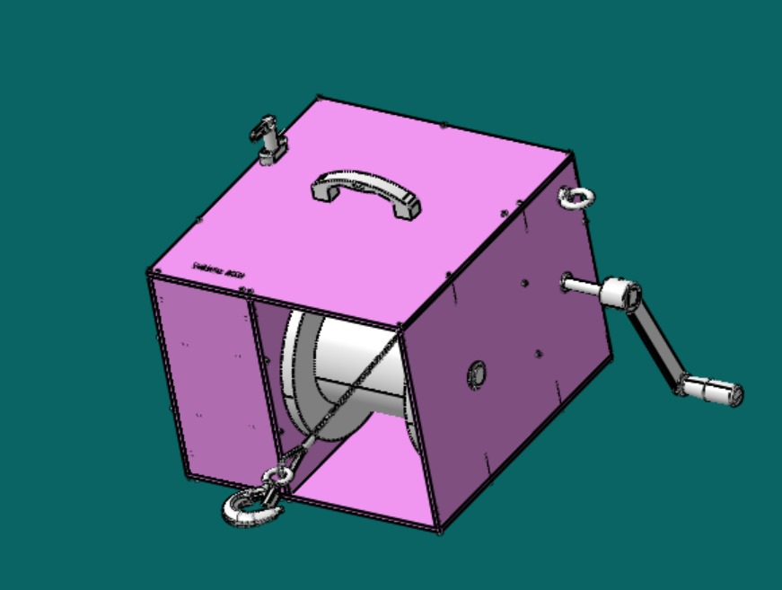
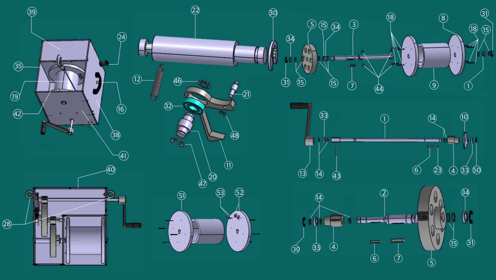
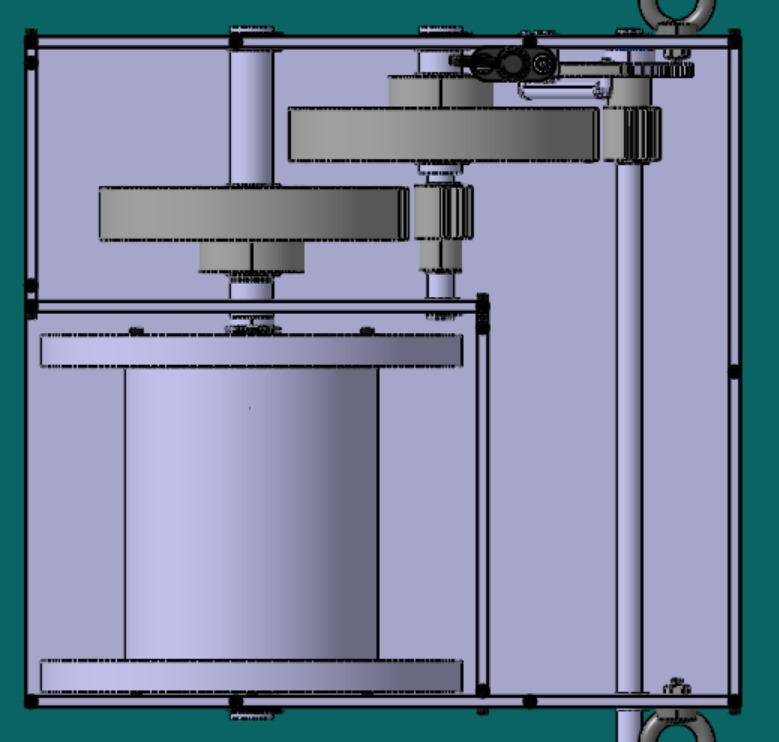

Forest Winch
A mechanical construction project focused on designing and building a drill winch with Lina, Orjowane and Pauline.
About the project
We designed and built a functional winch from the first sketches to the final assembly. The project combined mechanical calculations, 3D design and hands-on fabrication.
Process and teamwork
We started with the design and calculations, created the 3D model, and then built the winch. We worked together throughout the project while dividing the main responsibilities.
The winch



Project files
Download the technical files used to document the drill winch:
Technical document (PDF) 3D model (STP)